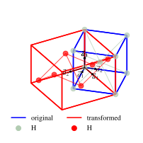
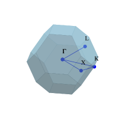

Quickstart#
[1]:
import numpy as np
import matplotlib.pyplot as plt
import ipyvasp as ipv
Let’s create some dummy POSCAR.
[2]:
poscar = ipv.POSCAR.new(
[[0.5, 0.5, 0.0], [0.0, 0.5, 0.5], [0.5, 0.0, 0.5]],
{"Ga": [[0.0, 0.0, 0.0]],"As": [[0.25, 0.25, 0.25]]},
scale = 5
)
site_kws = dict(alpha=1)
ax1, ax2 = ipv.get_axes((6,3),ncols=2, axes_3d=[0,1])
poscar.splot_lattice( ax = ax1, fill = False,label='original',
site_kws=site_kws)
poscar.transform(lambda a,b,c: (b+c-a, a+c-b, a+b-c)).splot_lattice(
ax=ax2, fill = False, color='red', label='transformed',
site_kws=site_kws
)
ax1.view_init(azim=-25, elev=15)
ax2.view_init(azim=-35, elev=15)

[83]:
poscar.splot_bz(fill = True,color='skyblue', vectors=None,lw=0.1).set_axis_off()
ax = poscar.splot_kpath([(0,0,0), (1/4,1/2,-1/4), (0.5,0.5,0), (0,0,0), (0,0.5,0)],
labels = ['Γ', 'K', 'X', 'Γ', 'L'], fmt_label=lambda lab: lab+'\n')
ax.view_init(azim=55, elev=25)

[84]:
fig = poscar.iplot_bz(color='blue')
ipv.iplot2html(fig)
[84]:
We can interplate kpath based on current POSCAR, it gives correct distance between points.
[25]:
poscar.get_kpath([
(0,0,0,'Γ'),
(1/4,1/2,-1/4,'K'),
(0.5,0.5,0,'X'),
(0,0,0,'Γ'),
(0,0.5,0,'L')
], n=8)
Automatically generated using ipyvasp for HSK-PATH 0:Γ, 4:K, 5:X, 9:Γ, 12:L
13
Reciprocal Lattice
0.0000000000 0.0000000000 0.0000000000 0.076923
0.0625000000 0.1250000000 -0.0625000000 0.076923
0.1250000000 0.2500000000 -0.1250000000 0.076923
0.1875000000 0.3750000000 -0.1875000000 0.076923
0.2500000000 0.5000000000 -0.2500000000 0.076923
0.5000000000 0.5000000000 0.0000000000 0.076923
0.3750000000 0.3750000000 0.0000000000 0.076923
0.2500000000 0.2500000000 0.0000000000 0.076923
0.1250000000 0.1250000000 0.0000000000 0.076923
0.0000000000 0.0000000000 0.0000000000 0.076923
0.0000000000 0.1666666667 0.0000000000 0.076923
0.0000000000 0.3333333333 0.0000000000 0.076923
0.0000000000 0.5000000000 0.0000000000 0.076923
[26]:
poscar.get_kmesh(2,2,2, weight=0)
Generated uniform mesh using ipyvasp, GRID-SHAPE = [2,2,2]
8
Reciprocal
0.0000000000 0.0000000000 0.0000000000 0.000000
1.0000000000 0.0000000000 0.0000000000 0.000000
0.0000000000 1.0000000000 0.0000000000 0.000000
1.0000000000 1.0000000000 0.0000000000 0.000000
0.0000000000 0.0000000000 1.0000000000 0.000000
1.0000000000 0.0000000000 1.0000000000 0.000000
0.0000000000 1.0000000000 1.0000000000 0.000000
1.0000000000 1.0000000000 1.0000000000 0.000000
[3]:
view = poscar.view_ngl(color='red', dashboard=True)
view
If you are not seeing interactive widget above, don’t worry! We’ve got you covered with a screenshot below:
[111]:
view.download_image('nglview.png',factor=8, trim=True,)